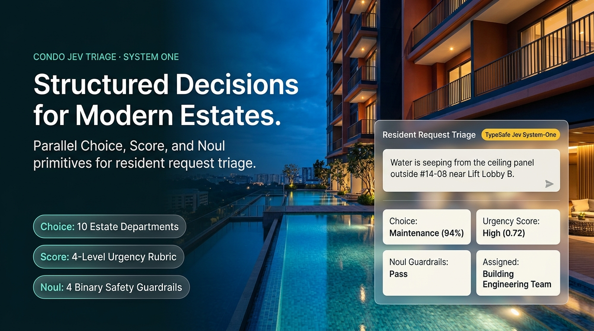
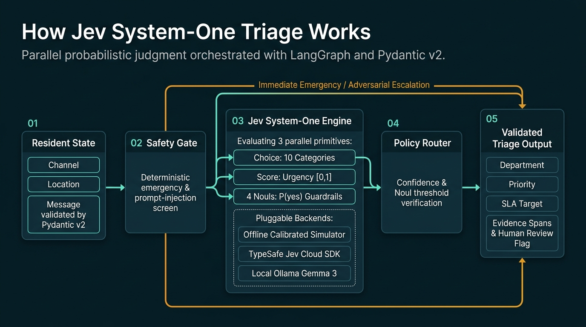

Structured Decisions
for Modern Estates.
Turn inbound condominium resident messages into calibrated department categories, urgency scores, and staff review decisions. Powered by TypeSafe Jev System-One primitives (Choice, Score, and Noul), LangGraph orchestration, an offline TF-IDF simulator, and optional local Ollama inference.

See the classifier in action.
This walkthrough follows a resident request from multi-channel intake through Jev System-One evaluation, emergency safety screening, batch CSV triage, and the 60-case benchmark.
Download MP4 · Download captions
Launch the interactive Streamlit app locally to test live policy threshold sliders, side-by-side engine comparisons, and auto-generated resident replies.
How a request becomes a decision.
Validated input flows through deterministic safety rules, parallel Jev System-One classification primitives (Choice, Score, and Noul), and configurable review policy thresholds.

Choice (department_category)
Selects one primary estate department from 10 fixed categories and returns both the full probability distribution and a concentration confidence score in [0, 1].
Score (urgency_level)
Rates operational urgency along a 4-level ordered rubric (low → normal → high → emergency), returning a continuous score in [0, 1].
Noul (4 Binary Guardrails)
Evaluates 4 parallel Yes/No questions returning P(yes) ∈ [0, 1]: life_safety_hazard, multi_intent_request, adversarial_or_sensitive, and requires_human_triage.
Eight slides. The complete Jev System-One story.
Open any slide at full 1920×1080 resolution, read the multi-page PDF, or download the PowerPoint deck.


Run it yourself.
Start the Streamlit interface with .\start_project.cmd or .\.venv\Scripts\python.exe -m streamlit run app.py, then open http://localhost:8501. The offline Jev simulator needs no API key.